공조냉동기계산업기사 (2006-08-16 기출문제)
1과목: 공기조화
1. 그림과 같은 단면을 가진 덕트에서 정압, 등압, 전압의 변화를 가장 잘 나타낸 것은? (문제 오류로 현재 복원중입니다. 보기 내용을 아시는 분들께서는 오류 신고를 통하여 보기 작성 부탁 드립니다. 정답은 다번입니다.)
- 복원중
- 복원중
- 복원중
- 복원중
(정답률: 51%)

2. 공기 세정기의 주요 부분은 앞부분의 세정실과 뒷부분의 무엇으로 구분 하는가?
- 배수관
- 유닛하트
- 유량조절밸브
- 엘리미네이터
(정답률: 85%)
3. 공기중의 수증기가 응축하기 시작할 때의 온도 즉, 공기가 수증기의 포화상태로 될 때의 온도는?
- 노점온도
- 관계습도
- 습구온도
- 건구온도
(정답률: 75%)
4. 감습장치에 해당 되지 않는 것은?
- 냉각감습장치
- 흡착감습장치
- 흡수감습장치
- 가열감습장치
(정답률: 54%)
5. 온수난방 방식에 대한 설명 중 옳은 것은?
- 중력순환식은 방열기를 보일러 보다 낮은 곳에 설치해야 하므로 주택 등과 같이 소형 건물에 적당하다.
- 역환수식은 2관식으로 각 방열기를 거치는 급수관과 환수관의 총길이가 대체로 동일하도록 배관한다.
- 2관식 배관방식은 순환력이 극히 좋지 않아서 근래에는 사용되지 않는다.
- 강제순환식은 온수의 밀도차에 의해 대류작용으로 자연순환하며, 소규모 건물에 대부분 적용된다.
(정답률: 55%)
6. 덕트의 분기부에 설치하여 풍량을 조절하는 댐퍼는?
- 루우프 댐퍼
- 방화 댐퍼
- 스플리트 댐퍼
- 볼륨 댐퍼
(정답률: 70%)
7. 유인 유닛(IDU)방식에 대한 설명 중 틀린 것은?
- 각 유닛마다 제어가 가능하므로 개별실 제어가 가능하다.
- 송풍량이 많아서 외기 냉방효과가 크다.
- 중앙 공조기는 처리 풍량이 적어서 소형으로 된다.
- 유인 유닛에는 동력배선이 필요 없다.
(정답률: 70%)
8. 아래 조건과 같은 외기와 실내공기를 1:4의 비율로 혼합했을 때 혼합공기의 상태는?
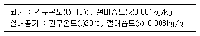
- t = 14℃, x = 0.0066kg/kg
- t = 16℃, x = 0.⑤5kg/kg
- t = 18℃, x = 0.045kg/kg
- t = 18℃, x = 0.⑤5kg/kg
(정답률: 43%)
9. 주철제 방열기의 표준 방열량에 대한 증기 응축수량은 약 얼마인가? (단, 증기의 증발잠열은 538kcal/kg이다.)
- 0.8kg/m2∙h
- 1.0kg/m2∙h
- 1.2kg/m2∙h
- 1.4kg/m2∙h
(정답률: 74%)
10. 다음에서 헌열비를 바르게 표시한 것은?
- 헌열량/전열량
- 잠열량/전열량
- 잠열량/헌열량
- 헌열량/잠열량
(정답률: 84%)
11. 다음 취득 열량 중 잠열량이 포함되지 않는 것은?
- 인체의 발열
- 조명기구의 발열
- 외기의 취득열
- 증기 소득기의 발생열
(정답률: 86%)
12. 다음의 가습장치에서 가습형식이 다른 하나는?
- 원심식
- 초음파식
- 수분무식
- 회전식
(정답률: 69%)
13. 1기압, 100℃의 포화 수 5kg을 100℃의 건 포화 증기로 만들기 위해서는 몇 kcal의 열량이 필요한가?
- 2695kcal
- 3500kcal
- 4750kcal
- 5860kcal
(정답률: 53%)
14. 다음 공조 방식 중에서 공기 - 물 방식이 아닌 것은?
- 복사 냉난방 방식
- 유인 유닛 방식
- 멀티 유닛 방식
- 휀코일 유닛 방식(덕트병용)
(정답률: 43%)
15. 덕트 설계도를 그리는 과정에서 주의할 사항 중 옳은 것은?
- 곡부분은 될 수 있는 대로 곡율 반경을 크게 한다.
- 확대부분의 각도는 가능한 한 45˚ 이상으로 한다.
- 축소부분의 각도는 가능한 한 60˚ 이내로 한다.
- 덕트 단면의 aspect ratio는 가능한 한 6보다 크게 한다.
(정답률: 69%)
16. 다음에서 복사난방의 장점이 아닌 것은?
- 낮은 온도에서도 쾌적성이 높다.
- 실내 온도가 균일하다.
- 설비비가 적게 든다.
- 간헐난방에 적합하다.
(정답률: 45%)
17. 다음은 공조방식의 사용에 대한 설명이다. 적합하지 않은 것은?
- 잠열부하가 많고 현열비가 적은 식당 등에는 단일덕트 재열방식이 사용된다.
- 냉난방의 부하분포가 복잡한 건물에서는 이중덕트 방식이 사용된다.
- 온습도 조건이 엄격하고 저소음 레벨의 요구시설에는 팬코일 유닛방식이 사용된다.
- 환기횟수가 많고 고성능 필터를 사용하는 클린룸 등에는 정풍량 단일덕트방식을 사용한다.
(정답률: 62%)
18. 염화리튬(LiCi)을 사용하는 흡수식 감습장치가 냉각식 감습장치보다 유리할 경우는?
- 공조되어 있는 실내의 현열비가 60% 이하일 때
- 공조기 출구의 노점이 7℃ 이상일 때
- 실내 잠열부하의 변동이 클 때 실내온도를 일정하게 유지시킬 때
- 온도가 42℃ 이상 또는 5℃ 이하에서 저습도로 할 때
(정답률: 52%)
19. 쾌감의 지표로 나타내는 불쾌지수와 관계 있는 공기의 상태량은 어느 것인가?
- 상대습도와 습구온도
- 현열비와 열수분비
- 절대습도와 건구온도
- 건구온도와 습구온도
(정답률: 63%)
20. 40W 짜리 형광등 10개를 조명용으로 사용하는 어떤 사무실이 있다. 이 때 조명기구로부터의 취득 열량은 약 얼마인가?
- 68kcal/h
- 210kcal/h
- 413kcal/h
- 625kcal/h
(정답률: 61%)
2과목: 냉동공학
21. 온도식 팽창밸브(Thermostatic expansion valve)에 있어서 과열도란 무엇인가?
- 고압측 압력이 너무 높아져서 액냉매의 온도가 충분히 낮아지지 못할 때 정상시와의 온도차
- 팽창밸브가 너무 오랫동안 작용하면 밸브 사이트가 뜨겁게 되어 오동작할 때 정상시와의 온도차
- 흡입관내의 냉매가스 온도와 증발기내의 포화온도와의 온도차.
- 압축기와 증발기속의 온도보다 1℃ 정도 높게 설정되어 있는 온도와의 온도차
(정답률: 70%)
22. 진공압력 200mmHg를 절대압력으로 환산하면 약 얼마인가? (단, 대기압은 1.033kg/cm2이다.)
- 0.52kg/cm2
- 0.76kg/cm2
- 1.72kg/cm2
- 3.52kg/cm2
(정답률: 53%)
23. 응축온도가 일정하고 증발온도가 높아짐에 따라 커지는 것은?
- 압축일의 열당량
- 응축기의 방출열량
- 냉동효과
- RT당 냉매순환량
(정답률: 67%)
24. 몰리에르 선도상에서 건조도(x)에 관한 설명으로 옳은 것은?
- 몰리에르 선도의 포화액선상 건조도는 1 이다.
- 액체 70%, 증기30%인 냉매의 건조도는 0.7 이다.
- 건조도는 습포화증기 구역 내에서만 존재한다.
- 건조도라 함은 과열증기 중 증기에 대한 포화액체의 양을 말한다.
(정답률: 67%)
25. 원심 압축기의 특징이 아닌 것은?
- 체적식이다.
- 저압의 냉매를 사용하고 취급이 싑다.
- 대용량에 적합하다.
- 서징현상이 발생할 수 있다.
(정답률: 67%)
26. 압축기의 V밸브에 관한 설명으로 옳지 않은 것은?
- V밸트의 장력이 너무 강하면 축에 무리한 힘이 걸린다.
- V밸트의 장력이 약하면 마찰에 의한 발열과 소모를 수반한다.
- 새 밸트의 운전후 단시일에 늘어나게 되는데 이 때는 왁스를 바른다.
- 벨트의 교환은 1개만 하지 말고 전부 한꺼번에 교환 한다.
(정답률: 63%)
27. 암모니아 냉동장치의 브르돈관 압력계 재질은?
- 황동
- 알루미늄강
- 청동
- 연강
(정답률: 70%)
28. 이중 효용 흡수식 냉동기에 대한 설명 중 옳지 않은 것은?
- 일중 효용 흡수식 냉동기에 비해 효율이 높다.
- 2개의 재생기를 갖고 있다.
- 2개의 증발기를 갖고 있다.
- 이중 효용 흡수식 냉동기에서 일중 효용 흡수식 냉동기와 같은 양의 냉매액을 얻기위해서는 가열량이 일중 효용보다 작다.
(정답률: 72%)
29. 제빙 장치에서 브라인의 온도가 -10℃이고, 얼음의 두께가 20CM인 관빙의 결빙 소요시간은?
- 24.4시간
- 22.4시간
- 20.4시간
- 18.4시간
(정답률: 69%)
30. 암모니아 수냉 응축기에 있어서 다음과 같은 조건일 때 열통과율은 약 얼마인가? (단, 냉각관에는 부착물이 없다.)
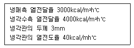
- 약 1254kcal/m2h℃
- 약 1362kcal/m2h℃
- 약 1468kcal/m2h℃
- 약 1519kcal/m2h℃
(정답률: 32%)
31. 다음 중 카르노 사이클(Carnot cycle)의 가역과정 순서를 올바르게 나타낸 것은?
- 등온팽창 → 단열팽창 → 등온압축 → 단열압축
- 등온팽창 → 단열압축 → 단열팽창 → 등온압축
- 등온팽창 → 등온압축 → 단열압축 → 단열팽창
- 등온팽창 → 단열팽창 → 단열압축 → 등온압축
(정답률: 74%)
32. “PV = C(상수)”이 식은 폴리트로프 변화의 일반식이다. 다음 설명중 맞는 것은?
- n = k일 때 등온변화
- n = 1일 때 정적변화
- n = ထ일 때 단열변화
- n = 0일 때 정압변화
(정답률: 60%)
33. 열의 일당량은?
- 860kg∙m/kcal
- 1/860kg∙m/kcal
- 427kg∙m/kcal
- 1/427kg∙m/kcal
(정답률: 67%)
34. 분자량이 44인 기체의 정압비열Cp = 0.1943kcal/kg∙k이다. 이 기체의 정적비열Cv는 약 몇 kcal/kg∙k인가? (단, 이반가스 정수 R는 848kg∙m/kmol∙k로 한다.)
- 0.0272
- 0.1492
- 0.4567
- 0.6311
(정답률: 47%)
35. 다음 중 후레쉬 가스(flash gas)발생 원인 중 틀린 것은?
- 관경이 큰 경우
- 수액기에 직사광선이 비쳤을 경우
- 스트레이너가 막혔을 경우
- 액관이 현저하게 입상했을 경우
(정답률: 75%)
36. 냉매의 구비조건 중 물리적 성질로 적합하지 않은 것은?
- 증발 잠열에 대한 액체의 비열은 적을 것
- 기체 및 액체의 비중이 적을 것
- 점도가 적고 전열성능이 양호할 것
- 임계온도와 응고온도가 모두 낮을 것
(정답률: 69%)
37. 흡수식 냉동사이클에서 열교환기를 사용하는 경우가 있는데, 열교환기의 위치로 가장 적당한 곳은?
- 증발기와 흡수기 사이
- 재생기와 응축기 사이
- 흡수기와 재생기 사이
- 응축기와 증발기 사이
(정답률: 49%)
38. 소형 냉동기(프레온계)에 사용되면서 냉각수용 배관 및 배수 설비가 필요하지 않는 응축기는?
- 횡형 원통다관식 응축기
- 대기식 응축기
- 증발식 응축기
- 공냉식 응축기
(정답률: 66%)
39. 2단압축 2단팽창 냉동장치에서 중간냉각기가 하는 역할이 아닌 것은?
- 저단 압축기의 토출가스 과열도를 낮춘다.
- 고압 냉매액을 과냉시켜 냉동효과를 증대시킨다.
- 저단 토출가스를 재 압축하여 압축비를 증대시킨다.
- 흡입가스 중의 액을 분리하여 리키드 백을 방지한다.
(정답률: 59%)
40. 냉동장치의 운전중 고압측 압력(압축기의 토출압력)이 높아지는 원인이 아닌 것은?
- 장치내에 냉매를 과잉 충전하였다.
- 응축기의 냉각수가 과다하다.
- 공기 등의 불응축 가스가 응축기에 고여 있다.
- 냉각관이 유막이나 물 때 등으로 오염되어 잇다.
(정답률: 60%)
3과목: 배관일반
41. 밀페식 팽창탱크에서 필요 없는 것은?
- 수위계
- 입력계
- 넘침관
- 안전밸브
(정답률: 45%)
42. 배관계의 도중에 설치하여 유체속에 혼입된 토사나 이물질 등을 제거하는 배관 부품은?
- 팽창이음(Joint)
- 밸브(Valve)
- 스트레이너(Strainer)
- 저수조(貯水槽)
(정답률: 79%)
43. 다음 중 배관내의 침식에 영향을 크게 미치지 않는 것은?
- 수속
- 사용시간
- 배관계의 소음
- 물속의 부유물질
(정답률: 75%)
44. 열팽창에 의한 배관의 신축이 방열기에 미치지 않도록 하기 위하여 방열기 주위의 배관은 다음 중 어느 방법으로 하는 것이 좋은가?
- 슬리브형 신축 이음
- 신축 곡관 이음
- 스위블 이음
- 벨로우즈형 신축 이음
(정답률: 65%)
45. 주철관의 이음방법이 아닌 것은?
- 소켓이음
- 플레어링이음
- 플랜지이음
- 노허브이음
(정답률: 68%)
46. 무기질 보온재에 관한 설명으로 맞지 않는 것은?
- 규산칼슘 보온재는 규조토와 석회석을 주성분으로하며 불에 타지 않는다.
- 세라믹화이버 보온재는 유리섬유와 같아서 내열성이 가장 낮다.
- 펄라이트 보온재는 방수 방습성이 우수하다.
- 무기질은 유기질보다 열전도율이 약간 크다.
(정답률: 40%)
47. 열팽창에 의한 관의 신축으로 배관의 이동을 구속 또는 제한하는 장치는?
- 터언버클
- 브레어스
- 리스트 레인트
- 행거
(정답률: 58%)
48. 냉동장치에서 증발기와 응축기가 동일 위치에 있을 때 설치하는 것은?
- 역구배 루우프배관
- 냉매액송 메인 밸브
- 균압배관
- 안전밸브
(정답률: 63%)
49. 냉매 배관 중 액관은?
- 압축기와 응축기까지의 배관
- 압축기와 증발기까지의 배관
- 응축기와 수액기까지의 배관
- 팽창밸브와 압축기까지의 배관
(정답률: 69%)
50. 다음은 관연결용 부속을 사용처벌로 구분하여 나열하였다 잘못된 것은?
- 관끝을 막을 때 : 레듀사, 부싱, 캡
- 배관의 방향을 바꿀 때 : 엘보우, 벤드
- 관을 도중에서 분기할 때 : 티, 와이, 크로스
- 동경관을 직선 연결할 때 : 소켓, 유니온, 니플
(정답률: 74%)
51. 냉매배관의 시공상의 주의사항 중 틀린 것은?
- 팽창밸브 부근에서 배관길이는 가능한 짧게 한다.
- 지나친 압력강하를 방지한다.
- 암모니아 배관의 관이음에 쓰이는 패킹재료는 천연고무를 사용한다.
- 두 개의 입상관 사용시 트랩과정은 되도록 크게 한다.
(정답률: 66%)
52. 다음 중 납관의 이음용 공구가 아닌 것은?
- 사이징 투울
- 드레서
- 맬릿
- 터언핀
(정답률: 60%)
53. 다음의 도시기호?
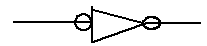
- 슬리이브 턱걸이 이음
- 엘보 턱걸이 이음
- 디스트리뷰터 용접 이음
- 리듀셔 용접 이음
(정답률: 41%)
54. 고가탱크 급수방식의 특징이 아닌 것은?
- 항상 일정한 수압으로 급수할 수 있다.
- 수압의 과대 등에 따른 밸브류 등 배관 부속품의 파손이 적다.
- 취급이 비교적 간단하고 고장이 적다.
- 탱크는 기밀 제작이므로 값이 비싸진다.
(정답률: 56%)
55. 다음 중 연단에 아마인유를 배합한 것으로 녹스는 것을 방지하기 위하여 사용되며 도료의 막이 굳어서 풍화에 대해 강하고 다른 착색도료의 밑칠용으로 사용되는 것은?
- 알루미늄 도료
- 광명단 도료
- 합성수지 도료
- 산화철 도료
(정답률: 77%)
56. 다음은 콕크밸브에 관한 설명이다. 틀린 것은?
- 콕크의 종류에는 대표적으로 글랜드콕크와 메인콕크가 있다.
- 0~90˚ 회전시켜 유량조절이 가능하다.
- 유체저항이 크며, 개폐시에 힘이 드는 것이 불편한 점이다.
- 콕크는 2방구만이 아니라 3방구, 4방구의 형태도 있다.
(정답률: 65%)
57. 다음의 압력배관용 탄소강 관중에서 두께가 가장 두꺼운 것은?
- SCH 60
- SCH 40
- SCH 30
- SCH 20
(정답률: 65%)
58. 열탕의 탕비기 출구의 온도를 85℃(밀도 0.96876kg/l),환수관의 환탕온도를 65℃(밀도 0.98001kg/l)로 하면 이순환계통의 순환수두는 얼마인가? (단, 가장 높은 곳의 급탕전의 높이는 10m이다.)
- 11.25mmAq
- 112.5mmAq
- 15.34mmAq
- 153.4mmAq
(정답률: 50%)
59. 증기주관 관말트랩 바이패스관 설치시 필요없는 것은?
- 스트레이너
- 유니온
- 열동식 트랩
- 안전밸브
(정답률: 60%)
60. 다음 일반용 폴리에틸렌 관에 관한 설명 중 틀린 것은?
- 경질 염화비닐관 보다 조직이 치밀하므로 중량이 무겁다.
- 충격에 강하고 내한성이 우수하다.
- 내열성과 보온성이 경질 염화비닐관보다 우수하다.
- 전기의 절연성이 크다.
(정답률: 28%)
4과목: 전기제어공학
61. 그림과 같은 블록선도가 의미하는 요소는?
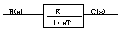
- 1차 늦은 요소
- 0차 늦은 요소
- 2차 늦은 요소
- 3차 늦은 요소
(정답률: 74%)
62. 자동제어의 기본 요소로서 전기식 조작기기에 속하는 것은?
- 다이아프램
- 벨로우즈
- 펄스 전동기
- 파일롯 밸브
(정답률: 63%)
63. 그림은 제어회로의 일부이다. 회로의 설명이 잘못된 것은?
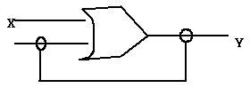
- 자기유지회로이다.
- 논리식은 Y = X + Y 이다.
- X가 “1”이면, 항상 Y 는 “1”이다.
- Y 가 “1”인 상태에서 X 가 0 이면, Y 는 0 이 되는 회로이다.
(정답률: 68%)
64. PLC 제어의 프로그램의 용이성에 대한 특징이 아닌 것은?
- 특별한 전문적 기술교육 없이 쉽게 이해할 수 있는 소프트 웨어이다.
- 계산기와는 달리 제어기능의 효과적인 수행이 목적이다.
- PLC를 사용한 시스템을 현장에서 보수하고 유지시키는 과정에서 PLC 동작에 대한 특별한 지식 없이 가능하다.
- PLC의 외부 동작이 내부 동작으로의 변환이 용이하지 않다.
(정답률: 54%)
65. 3상부하가 Y 결선되어 각 상의 임피던스가 Za = 3Ω, Zb = 3Ω, Zc = j3Ω이다. 이 부하의 영상임피던스는 몇 Ω 인가?
- 2 + j1
- 3 + j3
- 3 + j6
- 6 +j3
(정답률: 49%)
66. 도체의 전기저항에 대한 설명으로 옳은 것은?
- 단면적에 비례하고 길이에 반비례한다.
- 고유저항의 단위는 mho를 사용한다.
- 같은 길이, 같은 단면적에서 온도가 상승하면 저항이 감소한다.
- 도체 반지름의 제곱에 반비례한다.
(정답률: 42%)
67. 자기인덕턴스 L1, L2 상호인덕턴스 M의 코일을 같은 방향으로 직렬 연결한 경우, 합성인덕턴스는?
- L1+L2- M
- L1+L2+ M
- L1+L2+ 2M
- L1+L2-2 M
(정답률: 60%)
68. 그림과 같은 유접점 회로의 논리식은?(오류 신고가 접수된 문제입니다. 반드시 정답과 해설을 확인하시기 바랍니다.)
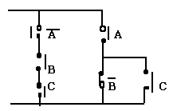
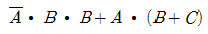
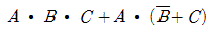
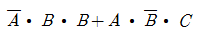
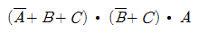
(정답률: 35%)
69. 그림과 같은 단위 피드백제어계의 압력을 R(s), 출력을 C(s)라 할 때 전달함수는 어떻게 표현되는가?
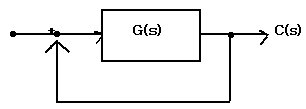
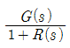
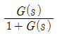
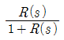
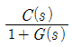
(정답률: 65%)
70. 3상 유도전동기의 출력이 5마력, 전압 220V, 효율 80%, 역률 90%일 때 전동기에 유입되는 선전류는 약 몇 A인가?
- 11.6
- 13.6
- 15.6
- 17.6
(정답률: 30%)
71. 다음과 같은 진리표의 논리식과 같지 않는 것은?
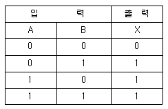
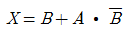
- X = A + B
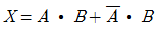
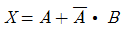
(정답률: 58%)
72. 3상 유도전동기의 회전방향을 바꾸려면 어떻게 하여야 하는가?
- 고저항을 임의의 1선에 삽입한다.
- 회전자를 수동으로 역회전시켜 기동한다.
- 3선을 차례대로 바꾸어 연결한다.
- 3선 중 임의의 2선을 서로 바꾸어 연결한다.
(정답률: 76%)
73. 그림과 같은 브리지정류기는 어느 점에 교류압력을 연결해야 하는가?
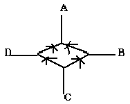
- B - D점
- B - C점
- A - C점
- A - B점
(정답률: 71%)
74. “옴의 법칙”에서 전류는?
- 저항과 전압에 비례한다.
- 저항과 전압에 반비례한다.
- 저항에 비례하고 전압에 반비례한다.
- 저항에 반비례하고 전압에 비례한다.
(정답률: 54%)
75. PI제어동작은 프로세스 제어계의 정상 특성 개선에 흔히 사용되는데, 이것에 대응하는 보상요소는?
- 지상보상요소
- 진상보상요소
- 동상보상요소
- 지상 및 진상보상요소
(정답률: 75%)
76. 유도전동기의 소음 중 기계적 소음이 아닌 것은?
- 언밸런스에 의한 진동임
- 베어링음
- 브러시음
- 슬립비이트음
(정답률: 54%)
77. 직류전동기의 속도제어 방법이 아닌 것은?
- 전압제어
- 계자제어
- 저항제어
- 슬립제어
(정답률: 54%)
78. 다음 중 피드백 제어에서 꼭 있어야 할 장치는?
- 전동기 시한 제어장치
- 응답속도를 느리게 하는 장치
- 발진기로서의 동작 장치
- 입력과 출력을 비교하는 장치
(정답률: 81%)
79. 직류 전원의 단자 전압을 내부 저항 250Ω의 전압계로 측정하니 50V 이고 1KΩ의 전압계로 측정하니 100V 이었다. 전원의 기전력 E 는 몇 V 인가?
- 100
- 150
- 200
- 250
(정답률: 38%)
80. i(t)=141.4 sinѡt[A] 의 실효값은 몇 A 인가?
- 81.6
- 100
- 173.2
- 200
(정답률: 44%)